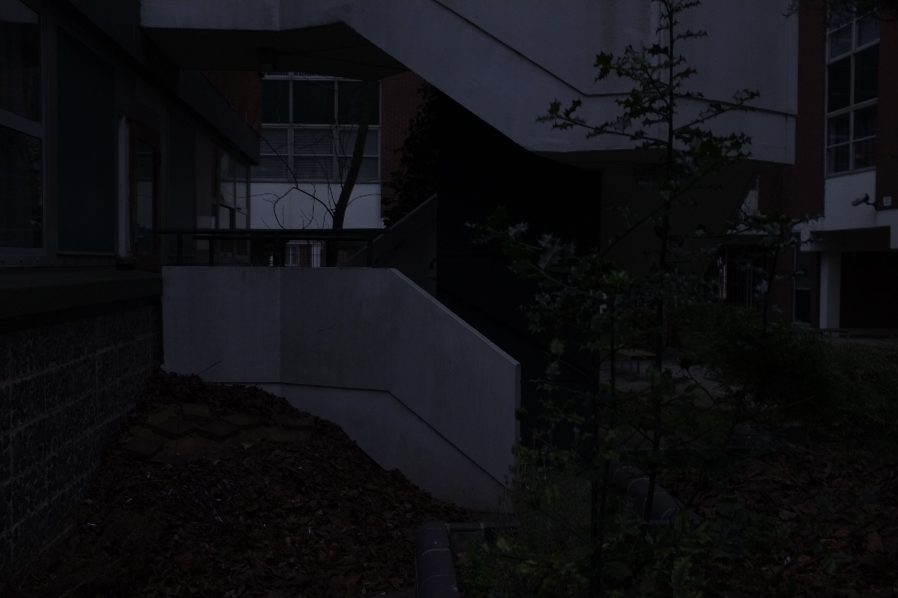

Travel to College
Spent considerable amounts of time alone waiting for public transport to and from college. Absorbing dull scenery made find elements that I enjoyed.
Spent considerable amounts of time alone waiting for public transport to and from college. Absorbing dull scenery made find elements that I enjoyed.
